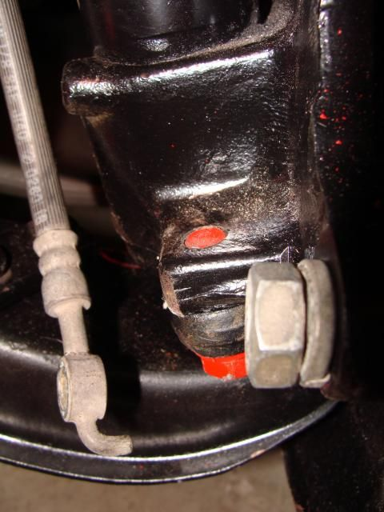

-
I'm having trouble getting my front caliper to bolt back to the strut, and wonder if it's possible that I switched the bolts somehow during disassembly… does anyone have the spec for the bolts? It's shown on the parts diagram as 08034-2451A but Courtesy doesn't list the specs.
It's not like I have tons of bolts left laying around… they're the right diameter and thread pitch, but they seem too short. I can't get the threads to engage without leaving off the split washer. I cannot see how the bolt would get enough threads to fully engage with the washer on there, even if it's flat instead of split. It seems like the bolt is about a half-inch too short. The only other bolt that I've come across that seems too long is the one that holds the knuckle arm to the strut tube. It sticks through the top of the threaded hole by about a half inch. When I compare them, that bolt has a larger head than the one that I'm trying to use for the brake caliper. However, their thread diameter looks the same (not sure about pitch).
I am feeling particularly newbish on this… I thought I kept everything together and put it all back where it was supposed to go, but something is telling me I screwed up…'86 NA - original owner (1986-93) and final owner (2005-present)
My build thread: http://z31performance.com/showthread…-Got-mine-back
-
Yep… that's what I did
Both have the same diamater and pitch, but a different length. Was just going to delete that first post, but apparently I can't… mods, please feel free… unless this may serve as a reminder to newbs everywhere that it's quicker to just swap bolts than spend so much time googling, searching, posting, etc.'86 NA - original owner (1986-93) and final owner (2005-present)
My build thread: http://z31performance.com/showthread…-Got-mine-back
-
And now with pictures…
Just to complete this thread, here's a couple pictures to illustrate my complete newbness…
This didn't look right to me after I got the steering knuckle installed…
This is how it was supposed to look… of course, the red bolt will be a reminder of my folly… at least until the paint wears off.

On the positive side, I did finish getting the brakes back on the car… these are stock, just painted for giggles…
 '86 NA - original owner (1986-93) and final owner (2005-present)
'86 NA - original owner (1986-93) and final owner (2005-present)
My build thread: http://z31performance.com/showthread…-Got-mine-back
-
Having too much thread is not important if it doesn't interfere with anything, but I would put antiseize or a blob of heavy grease on it -- more threads to rust will just make it worse to pull out later
-
I agree with GE if as long as they are not hitting something your good but in the perfect picture you would have 2-3 threads visible out the back this garentees max thread engagement and max clearance1984 300ZX - 1988 VG30T Engine, Trans, Diff, ECU
1987 300ZX TURBO - ( Parts Car ), 1988 300ZX TURBO - ( Parts Car )
1972 240Z -- Full restore - L28ET L6 Engine from 280zx, T-5 transmission, Rear diff from the 87
1998 Mazda B-2500, And a lot of bikes -
Yeah, this was obviously too much extra thread… I had disassembled everything, then collected the bolts I thought were for the calipers when I went to paint them. I determined which bolts were the pin bolts and which were the hard mounts just based on diameter and pitch, not length… so when I put the strut and steering knuckle together, that extra thread just puzzled me.
I guess after having worked on the engine and the suspension over the last several months, it's really amazing how few situations there are like this to get two bolts of same diameter but different lengths reversed. Every other time I found multiple lengths of the same diameter, there would be a different number of the "short" bolt than of the "long" bolt, so you could figure it out. Also, not many cases where the bolt hole is threaded all the way through the piece so one that's too long would work. I tried to "bag and tag" everything as I took it apart… but this was one I obviously missed.'86 NA - original owner (1986-93) and final owner (2005-present)
My build thread: http://z31performance.com/showthread…-Got-mine-back
-
I think this was partly why I wanted to make that nut & bolt chart… so you could look up which size your bolt should be, or match up the purpose of the bolt you have. -
^ +1000 ^ on that idea.... you could crowd source the work, just let everyone here comment on a thread and one of the mods keeps a table in the top updated. Basically blueprint the Z31 organically as folks work on their own cars and contribute…'86 NA - original owner (1986-93) and final owner (2005-present)
My build thread: http://z31performance.com/showthread…-Got-mine-back
-
Yea except half the rednecks will report 1-15/16" for something instead of a nominal 50mm
Anyway we do have the nut and bolt chart/wiki thing based on my efforts, it just needs updates time to time -
What ever happened to the Nut & Bolt reference chart? I thought you or XemonZ31 Had expanded on my chart .http://www.garymolitor.com/300zx/par…ts_list-01.htmOriginally posted by G-E View Post -
Woohoo. There it is. Thanks. That will help me when I start the reassembly.Originally posted by G-E View Post -
Well, that's interesting. The wiki page on Z31.com shows the two bolts in my original problem (knuckle to strut and caliper to strut) to be the same length… maybe it was different on the 87+ models?'86 NA - original owner (1986-93) and final owner (2005-present)
My build thread: http://z31performance.com/showthread…-Got-mine-back

Copyright © 2006–. All rights reserved. Privacy Policy